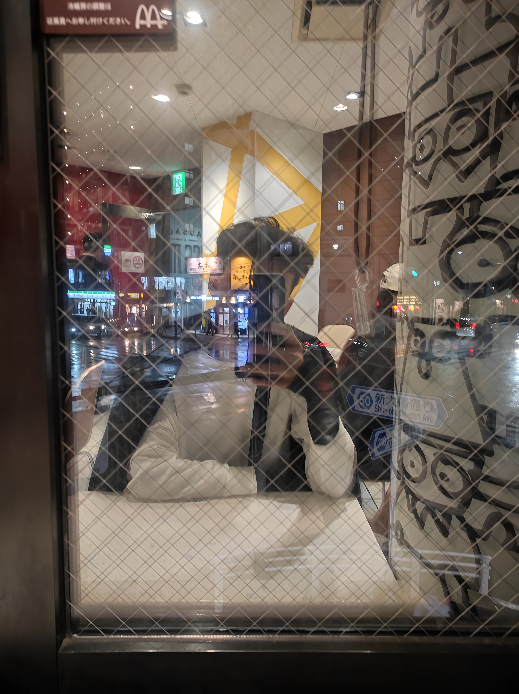

Halo, nama saya Irfansyah Ridho Aninda. Saya adalah mahasiswa yang tertarik pada dunia web development dan sedang belajar membuat website pribadi sederhana.
Saya suka mencoba hal baru dan berharap suatu hari bisa membuat aplikasi yang bermanfaat bagi banyak orang.